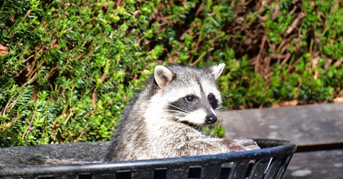

Raccoons have become particularly notorious in urban areas for consuming food waste. They possess impressive problem-solving abilities and can break into all but the most secure food waste bins, which has earned them the derisive nickname trash panda. The presence of Raccoons in close proximity to humans may be undesirable, as Raccoon droppings (like most wild animals) contain parasites and other disease vectors. Raccoon roundworm is of particular concern to public health. It is found in about 60 percent of adult Raccoons. The general presence of Raccoons in an area is not typically of concern, but nests or droppings found within or near structures should be destroyed. Roundworm eggs are very robust and bleach alone is insufficient. burning or treatment with hot solutions of sodium hydroxide is required. The keeping of Raccoons of pets is illegal in some jurisdictions due to these risks
